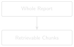

# code/chapter_07/token_chunking.py
import tiktoken
def chunk_text_by_tokens(text: str, chunk_tokens: int = 200,
overlap_tokens: int = 40) -> list[str]:
enc = tiktoken.get_encoding("cl100k_base")
tokens = enc.encode(text.strip())
chunks, start = [], 0
while start < len(tokens):
end = min(len(tokens), start + chunk_tokens)
chunks.append(enc.decode(tokens[start:end]).strip())
if end == len(tokens):
break
start = max(0, end - overlap_tokens)
return chunks7 Chunking That Respects Report Structure

Progress ███████░░░░░░ 7 / 13 · Estimated time: 45–60 min · Difficulty: 🟠 Intermediate
7.1 Learning objectives
By the end of this chapter, you will be able to:
- Explain why chunk size is measured in tokens, not characters or words.
- Implement token-based chunking with overlap using
tiktoken. - Implement segment-aware chunking that breaks at natural report boundaries (section headers) instead of at an arbitrary character count.
7.2 Operational Problem
Oumy, the drilling engineer, notices something odd while reviewing retrieval results: why does the exact sentence she needs keep landing right on a chunk boundary? Chapters 1–5 embedded each report as a single unit — fine for a ten-report sample, unworkable at the full archive’s scale. A single Utah FORGE report already has ten distinct sections (WELL/JOB INFORMATION, BOP, CASING, MUD, DRILL BITS, PUMPS, BHA, SURVEY DATA, CONSUMABLES, TIME BREAKDOWN) packed onto one page. Embed too much of that in one vector and the embedding blurs the casing programme together with the stuck-pipe narrative, hurting retrieval precision. Split naively at a fixed character count and you’ll cut report #38’s stuck-pipe sentence in half mid-word, right across a chunk boundary — the exact passage you most need to retrieve becomes the two chunks least likely to score well.
7.3 Example DDR extract
NoteWhy naive splitting fails, using real report #38 text
Naive fixed-character split, mid-sentence:
Chunk A: "...23:30 04:00 4.5 Drill From 6,360' to 6,507', (147') Total,
32.6' feet per hour. WOB 20 TO 35k, Rotary 50, Torque 6,500,
SPP 3200-3400 GPM 560, DIFF 200-300psi During the slide lost
tool face and became assembly became st"
Chunk B: "uck 04:00 06:00 2.0 Work pipe, circulate lube sweep, work
tool back in position Pipe free"A query about “what happened when the assembly got stuck” now has its key evidence split across two separately-scored chunks — neither of which alone contains the complete sentence.
7.4 Theory
Two ideas, used together, fix this:
- Token-based sizing. Language models and embedding models operate on tokens, not characters — and token count is what actually determines whether a chunk fits a model’s context window and how much a given chunk “costs” downstream. Chunking by token count (with a library like
tiktoken) is more accurate than chunking by character or word count. - Segment-aware boundaries. Rather than cutting at a fixed token count regardless of content, detect natural boundaries — section headers like
TIME BREAKDOWNorSURVEY DATA, which every Utah FORGE report uses consistently — and prefer to split there. A chunk that ends at a genuine section break is far more likely to be a self-contained, retrievable unit of meaning than one that ends mid-sentence because a counter hit its limit.
TipEngineering Translation: Token
A token is the unit a language model actually counts in — roughly a word or a word-fragment, not a character and not quite a word either. It’s the same idea as a rig measuring progress in footage drilled, not characters typed on the report: footage is the unit that actually determines what the operation costs and how far along it is.
TipEngineering Translation: Overlap
Overlap between chunks is like re-surveying the last few feet of the previous run before starting the next one: a small deliberate repeat at the seam, so nothing that mattered right at the boundary gets lost between the two pieces.
The companion pipeline, DDR_UTAH_FORGE, implements both in src/rag_pdf/chunking.py. chunk_text_by_tokens() does token-based splitting with configurable overlap (so context isn’t lost entirely at a boundary), falling back to a word-based approximation if tiktoken isn’t available. split_text_for_segment_aware_chunking() goes further: it walks the text line by line, detects boundary patterns, and returns a list of SegmentBlock objects — each one bundling together a title, its text, and a boundary_type (MATCH, INSERT, or CONTINUATION) recording why the segment starts where it does, the same way an equipment spec sheet bundles a component’s dimensions together instead of scattering them as loose numbers.
Run against the real 76-report archive, this pipeline’s chunking produces 1,428 chunks — an average of about 19 chunks per report, reflecting just how much structured content (header, seven data tables, and a narrative time breakdown) each single-page DDR actually contains.
Token-based chunking with overlap looks like this — each chunk shares a few tokens with its neighbour, so no boundary loses context entirely:
tokens: t1 t2 t3 t4 t5 t6 t7 t8 t9 t10 t11 t12
chunk 1: [t1 t2 t3 t4 t5 t6]
chunk 2: [t5 t6 t7 t8 t9 t10]
chunk 3: [t9 t10 t11 t12]
^^^^^^ ^^^^^^
overlap overlap7.5 Implementation
7.5.1 Step 1: split text into token-sized chunks with overlap
What problem are we solving?
Split a report’s text into pieces small enough to embed precisely, without severing the exact sentence a future query needs right at a chunk boundary.
Inputs
- Full report text (a Python string).
chunk_tokens: how many tokens each chunk should hold.overlap_tokens: how many tokens each chunk repeats from the end of the previous one.
Expected Output
A list of text chunks, each roughly chunk_tokens tokens long, each overlapping the next by overlap_tokens tokens.
What just happened?
The text got converted into tokens, then sliced into fixed-size windows that each step forward by less than a full window’s width — that gap is the overlap, and it’s what keeps a sentence sitting near a boundary from being fully lost to one side or the other.
This is a direct simplification of chunk_text_by_tokens() in the companion repository — same sliding-window-with-overlap logic, without the word-based fallback path. Read the full version, plus split_text_for_segment_aware_chunking_with_patterns(), in src/rag_pdf/chunking.py.
7.5.2 Step 2: give every chunk back its page number
What problem are we solving?
chunk_text_by_tokens() above returns plain strings — once a chunk is made, nothing about it remembers which page it came from. That’s fine until Chapter 10 needs to cite a page number for a claim, and discovers there isn’t one to cite. Chapter 1’s extract_text() already writes a --- Page N --- marker before each page’s text; this step reads those markers back out and chunks each page separately, so no chunk can ever straddle a page boundary or lose track of which one it belongs to.
Inputs
- The full
--- Page N ----marked text Chapter 1’sextract_text()produces, not a single page’s text in isolation.
Expected Output
A list of (page_number, chunk_text) pairs — the same chunks as before, each now labelled with the real page it came from.
import re
PAGE_MARKER = re.compile(r"--- Page (\d+) ---\n?")
def split_pages(pages_text: str) -> list[tuple[int, str]]:
matches = list(PAGE_MARKER.finditer(pages_text))
pages = []
for i, match in enumerate(matches):
page_number = int(match.group(1))
start = match.end()
end = matches[i + 1].start() if i + 1 < len(matches) else len(pages_text)
pages.append((page_number, pages_text[start:end].strip()))
return pages
def chunk_pages_by_tokens(pages_text: str, chunk_tokens: int = 60,
overlap_tokens: int = 15) -> list[tuple[int, str]]:
chunks_with_pages = []
for page_number, page_text in split_pages(pages_text):
for chunk in chunk_text_by_tokens(page_text, chunk_tokens, overlap_tokens):
chunks_with_pages.append((page_number, chunk))
return chunks_with_pagesWhat just happened?
split_pages undoes Chapter 1’s markers, turning the joined text back into (page_number, page_text) pairs. chunk_pages_by_tokens then chunks each page’s text separately — reusing the exact function from Step 1 — and tags every resulting chunk with the page it came from. Chunking per page instead of chunking the whole joined document is what actually guarantees no chunk can straddle two pages: the token window in Step 1 never sees more than one page’s text at a time.
Run this against report #38’s real text and it produces 37 chunks, every one correctly labelled page 1 — because every DDR in this sample archive is a single page (Chapter 1). That’s not a very demanding test of the page-tracking logic, and it’s worth being honest about that: this step earns its keep the day someone points this code at a multi-page report, not on this archive. The became stuck sentence still lands whole inside one chunk, exactly as in Step 1 — page tracking didn’t cost anything the chunking itself hadn’t already paid for.
7.6 Production Reality
This chapter’s Field Notes (below) shows the heading heuristic getting a perfect score — because Utah FORGE’s reports all come from one piece of software, using one consistent template. A larger, multi-operator archive rarely offers that luxury:
- different reporting software formats section headers differently — all-caps, title case, bolded, or not visually marked at all — so a heading heuristic tuned to one archive’s convention may need retuning, or replacing entirely, for another
- OCR’d pages (Chapter 6) can corrupt exactly the visual cues a heading heuristic depends on — a garbled, partly-misread line may no longer look like a clean heading at all
tiktoken’scl100k_baseencoding matches a specific family of language models; a different embedding or generation model in your pipeline may tokenize the same text differently, sochunk_tokens=200isn’t automatically the same size everywhere- overlap improves retrieval at chunk boundaries, but it also multiplies how much text you store and embed — worth measuring deliberately once an archive holds thousands of reports instead of ten
7.7 Practical exercise
🟢 Beginner
Notice this uses smaller numbers than the chunk_tokens=200, overlap_tokens=40 shown above — deliberately. Every DDR in this sample is a single page, so at 200/40 one report only splits into 11 chunks; at 60/15 it splits into 37. More chunks from one short report makes the idea of chunking itself easier to see and check by eye, which is the point of this exercise. Real archives with real budgets tend to land closer to 200/40 or larger — see the Production Reality note above.
Try it yourself: Chunk report #38’s full text with chunk_tokens=60, overlap_tokens=15, and confirm the stuck-pipe sentence (“During the slide lost tool face and became assembly became stuck”) appears complete within at least one chunk rather than split across two.
You’ll know it worked when: you can point to a single chunk that contains the full sentence, from “During the slide” through “became stuck.”
7.8 Field notes
Warning🔧 Field notes: does the heading heuristic ever guess wrong?
Action: run the “all-caps line under 6 words = heading” rule against every line of all ten real reports, and list every match.
Result: every single match — across all ten reports — is a genuine section header: BHA, BOP, CASING, CONSUMABLES, DRILL BITS, MUD, PUMPS, SURVEY DATA, TIME BREAKDOWN, WELL/JOB INFORMATION, plus the completion report’s FLUID DATA, FRAC, PERFORATIONS, SAFETY, and TIME LOG. Zero false positives — no data row anywhere in the archive happens to look like a heading.
Why: this isn’t luck — it reflects something real about how DDR software generates these reports. Section headers are short, fixed, all-caps labels from a small controlled vocabulary; data rows always carry numbers, units, or lowercase narrative text that the pattern correctly excludes.
Lesson: a heuristic that “seems reasonable” is still a guess until you’ve run it against real data and checked every match by hand. This one happens to be exactly right on this archive — but that’s a claim worth verifying yourself before trusting it on a different one, not an assumption to inherit.
7.9 Challenge exercise
🟠 Intermediate
Challenge: Implement a minimal segment-aware splitter that treats any all-caps line under 6 words (like MUD, DRILL BITS, SURVEY DATA, TIME BREAKDOWN) as a section heading and starts a new segment there. Run it against report #38’s full text and confirm it produces one segment per section rather than one blended mass of casing, mud, and time-breakdown text. A reference solution — and the full production logic — is in code/chapter_07/challenge/ and DDR_UTAH_FORGE/src/rag_pdf/chunking.py respectively.
7.10 Key takeaways
- Chunk size belongs in tokens, because that’s the unit every downstream model actually consumes.
- Overlap prevents context from vanishing at a chunk boundary, at the cost of some redundancy in the index.
- Segment-aware boundaries produce chunks that are more likely to be self-contained, retrievable units — worth the extra complexity once reports have real internal structure, which every DDR in this archive does.
- A chunk that doesn’t know its own page number can’t be cited by page later — chunk per page, not per document, if Chapter 10’s citations need to mean anything.
7.11 Repository files
| File | Purpose |
|---|---|
code/chapter_07/token_chunking.py |
Token-based chunker with overlap, plus page-aware chunking |
DDR_UTAH_FORGE/src/rag_pdf/chunking.py |
Production token + segment-aware chunking (companion repo) |
CautionCHECKPOINT — Chapter 7
Tip✓ WHAT YOU BUILT
token_chunking.py — a token-based chunker with overlap, turning any whole report into retrievable pieces sized for precise embedding instead of one blurry whole-document vector, each one labelled with the exact page it came from.
7.12 What can you do now that you couldn’t do before?
You can split a report into chunks small enough to embed precisely, without cutting the exact sentence you need to retrieve in half at a chunk boundary — and every chunk still knows which page it came from, so nothing downstream has to guess.
7.13 Suggested next step
Coming up in Chapter 8: Well-formed chunks still need somewhere fast to live. Chapter 8 replaces Chapter 4’s brute-force cosine search with a real vector database, and scales retrieval from ten documents to the full 76-report archive.